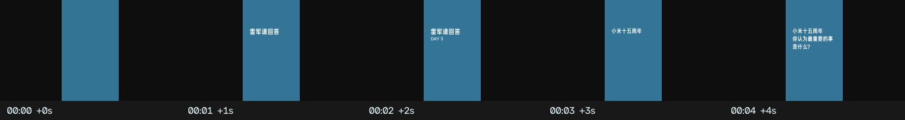
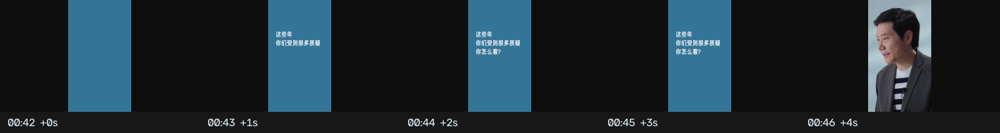
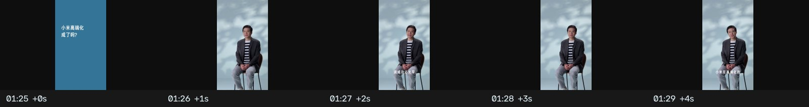
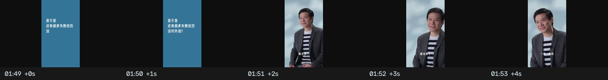
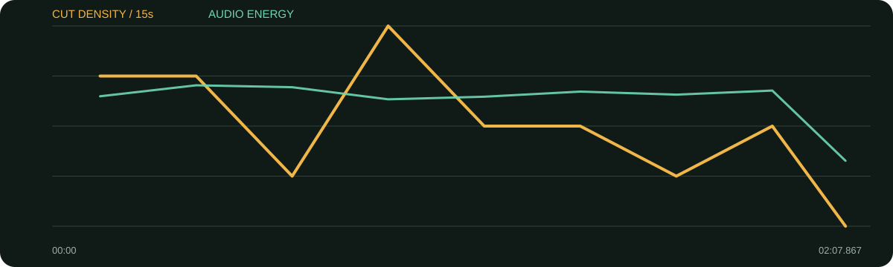

景别 / 机位系统
- 竖屏主体固定在蓝色云朵背景前
- 全身/中景/近景交替，部分变化可能来自同源画面裁切，不能一概当成真实多机位
- 答案开头常用较稳的中近景，举例或强调时换近/全身
- 问题卡切断连续时间，给跳切和重组答案提供天然遮罩
它的节奏发动机不是转场插件，而是“问题卡蓄力—答案快速给结论—景别复位”。蓝色整屏问题卡既是花字，也是明确的章节断点。
口径说明：候选镜头由场景检测生成，闪光、人物快速动作、数字推拉和图形变化都可能误触发；逐秒重点由真实原片、字幕语义和全片总览人工选择。字幕来自本地中文语音识别，人名、品牌名与行业词可能有误，不把自动转写当逐字稿。
每张总览按时间顺序覆盖全片。它用于检查章节、B-roll密度和景别回环；详细切点以候选镜头表与下面的逐秒重点为准。
| 时间 | 章节 | 内容推进 | 剪辑任务 |
|---|---|---|---|
| 00:00–00:19 | 问题1：十五周年最重要的事 | 两件事：找人、攒钱。 | 冷开场卡片后迅速给结论，用数字结构提高记忆。 |
| 00:19–00:43 | 问题2：为什么仍在一线 | 创业成长快、缺人、内部提拔与外部招募。 | 卡片做硬分隔，答案按原因—行动剪短。 |
| 00:43–01:26 | 问题3：怎么看质疑 | 模式新、增长快、用智能工厂改变印象。 | 最长答案段用景别变化维持注意力。 |
| 01:26–01:50 | 问题4：高端化成功了吗 | 还太早，但认可度提升，以SU7 Ultra举例。 | 问题卡后先保留谨慎判断，再给具体数字/产品。 |
| 01:50–02:08 | 问题5：是否有失败没说 | 失败很多，以乐观玩笑收尾。 | 最后一问短促，笑点和人物性格完成片尾。 |
几乎没有传统B-roll；图形问题卡承担分章、遮挡跳剪和重置注意力三项工作。
综合音轨平均能量偏低，语音仍是绝对主位。问题卡处的音量与停顿可核验，但未做人声/配乐分轨，不能确认每张卡是否存在独立音效。
每张长图从左到右为真实的连续秒点。重点不是记住截图，而是看清一组画面怎样“进入—完成任务—退出”。

画面事实蓝底白字先给观看任务，再进入人物。
怎么复现问题最多两行，逐行间隔约半秒，确保观众读完。
画面事实上一答案收完后整屏换色，主动清空注意力。
怎么复现问题卡前给句号，卡片至少停够一遍默读。

画面事实从内部管理切到外部评价，视觉断点匹配内容转向。
怎么复现大主题变化才用整屏卡，小补充问题不要滥用。

画面事实卡片压缩过渡，人物出现后直接回答“还太早”。
怎么复现把最有张力的回答放卡片之后第一句。

画面事实最后问题更轻，节奏变短并以人物笑点结束。
怎么复现严肃问答末尾可用一个性格化问题释放压力。

| 观察项 | 15秒窗口 |
|---|---|
| 视觉最密 | 00:45–01:00（16.0 候选切镜/分）；00:00–00:15（12.0 候选切镜/分）；00:15–00:30（12.0 候选切镜/分） |
| 视觉最缓 | 02:00–02:07（0.0 候选切镜/分）；00:30–00:45（4.0 候选切镜/分）；01:30–01:45（4.0 候选切镜/分） |
| 综合音轨最强 | 00:15–00:30（-23.3 dBFS）；00:30–00:45（-23.8 dBFS）；01:45–02:00（-24.5 dBFS） |
“视觉最密/最缓”基于自动候选切镜；“综合音轨最强”包含人声、环境声、音乐和音效，不能单独当作配乐音量。平均综合音轨为 -25.96 dBFS，最高15秒窗口 -23.34 dBFS，最低15秒窗口 -40.31 dBFS。
| # | 入点 | 出点 | 时长 | 代表帧秒点 | 证据 |
|---|---|---|---|---|---|
| 1 | 00:00.000 | 00:07.167 | 7.17s | 0.750000s | 自动候选 |
| 2 | 00:07.167 | 00:10.967 | 3.80s | 7.916667s | 自动候选 |
| 3 | 00:10.967 | 00:14.233 | 3.27s | 11.716667s | 自动候选 |
| 4 | 00:14.233 | 00:18.300 | 4.07s | 14.983333s | 自动候选 |
| 5 | 00:18.300 | 00:21.667 | 3.37s | 19.050000s | 自动候选 |
| 6 | 00:21.667 | 00:24.467 | 2.80s | 22.416667s | 自动候选 |
| 7 | 00:24.467 | 00:28.400 | 3.93s | 25.216667s | 自动候选 |
| 8 | 00:28.400 | 00:36.167 | 7.77s | 29.150000s | 自动候选 |
| 9 | 00:36.167 | 00:42.000 | 5.83s | 36.916667s | 自动候选 |
| 10 | 00:42.000 | 00:45.633 | 3.63s | 42.750000s | 自动候选 |
| 11 | 00:45.633 | 00:49.100 | 3.47s | 46.383333s | 自动候选 |
| 12 | 00:49.100 | 00:55.567 | 6.47s | 49.850000s | 自动候选 |
| 13 | 00:55.567 | 00:56.867 | 1.30s | 56.151667s | 自动候选 |
| 14 | 00:56.867 | 00:58.733 | 1.87s | 57.616667s | 自动候选 |
| 15 | 00:58.733 | 01:04.933 | 6.20s | 59.483333s | 自动候选 |
| 16 | 01:04.933 | 01:10.733 | 5.80s | 65.683333s | 自动候选 |
| 17 | 01:10.733 | 01:12.367 | 1.63s | 71.468333s | 自动候选 |
| 18 | 01:12.367 | 01:18.533 | 6.17s | 73.116667s | 自动候选 |
| 19 | 01:18.533 | 01:23.267 | 4.73s | 79.283333s | 自动候选 |
| 20 | 01:23.267 | 01:25.867 | 2.60s | 84.016667s | 自动候选 |
| 21 | 01:25.867 | 01:32.333 | 6.47s | 86.616667s | 自动候选 |
| 22 | 01:32.333 | 01:43.733 | 11.40s | 93.083333s | 自动候选 |
| 23 | 01:43.733 | 01:47.967 | 4.23s | 104.483333s | 自动候选 |
| 24 | 01:47.967 | 01:50.933 | 2.97s | 108.716667s | 自动候选 |
| 25 | 01:50.933 | 01:54.233 | 3.30s | 111.683333s | 自动候选 |
| 26 | 01:54.233 | 02:01.133 | 6.90s | 114.983333s | 自动候选 |
| 27 | 02:01.133 | 02:07.867 | 6.73s | 121.883333s | 自动候选 |